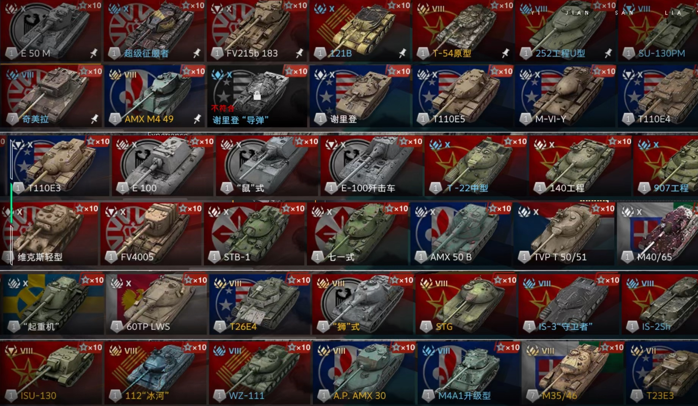

Game
Situation
.jpg)
|  |
Game Introduction |
| 《坦克世界闪击战》是由知名战争网游《坦克世界》开发商Wargaming出品，网易游戏独家运营中国版的一款7V7实时匹配的坦克载具射击对战手游 。这款游戏以其媲美端游的视觉效果、卓越的游戏平衡性、深度策略性和高超的操作技巧而深受亿万玩家喜爱 |
| 游戏根据史实复刻还原了八大系列坦克，总数超过了400辆，提供了丰富的坦克选择 。玩家可以在游戏中展现高超的坦克驾驶技巧，创造超越历史的作战战术，体验令人惊叹的真实坦克大战 。游戏地图包括丘陵、城市、沼泽、海滩、仓库、遗迹等多种地形，还原了真实战场的环境 |
| 《坦克世界闪击战》的核心玩法是7v7实时匹配团队对决，以高度还原的视觉和数值平衡性为基础，实现玩法上最大限度的复杂和真实。玩家既可以在游戏中印证二战中的著名作战策略，也可以演绎出众多变化多样，史无前例的作战策略 |
| 此外，游戏还具有以下特色： |
| 超400辆坦克——八系战车史诗集结：游戏具有极高的还原度，目前已经开发8大车系，超过400辆坦克，大多数坦克由二战中真实的坦克复刻 |
| 7V7匹配战斗——团队配合公平竞技：游戏以7v7实时匹配团队对决为核心玩法，实现玩法上最大限度的复杂和真实 |
| 多种游戏模式：包括经典的遭遇战、争霸战以及多种娱乐模式，满足了不同玩家的需求 |
| 实时语音聊天和文字交流：玩家可以与队友紧密合作，共同制定战术，击败敌人 |
| 高品质的图像渲染技术：呈现出逼真的战场环境和细腻的光影效果，让玩家身临其境地感受坦克战场的震撼 |
| 注重策略性和操作性：玩家需要灵活运用地形、掩体以及队友的支援，才能在战场上立于不败之地 |
| 丰富的成就系统和类似段位的评级系统：玩家可以通过完成挑战和提升自己的战斗技巧，获得荣誉和奖励 |
《坦克世界闪击战》是一款集策略、速度和成长于一体的战争游戏，以其独特的战斗系统和策略元素吸引了众多玩家的喜爱，并且提供了丰富的社区互动功能
|
Game Situation |
|
| 玩家行为问题：在任何多人在线游戏中，玩家的行为都可能影响游戏环境。如果存在挂机等恶意破坏游戏平衡或者不文明交流的行为，这会导致游戏环境变差 。 |
| 游戏平衡性问题：虽然《坦克世界闪击战》强调公平竞技，但一些坦克过于强势，影响了游戏的平衡性，而且玩家可能会因为个人技术水平、坦克性能差异等因素感受到游戏平衡性的问题 。 |
| 土豆服务器：玩家可能会因为网络不稳定或延迟过高而感到游戏体验不佳。 |
| 活动阉割：外服各种各样超值的活动到国服全没了。 |
| 抽奖失败：玩家给网易丢了钱，只要运气不好可能啥都捞不到。 |
 |
| 坦克种类介绍及对应职能 | |
| 重型坦克HT（菱形二斜杠） | 1.重坦：团队之盾，但同时也能够提供不俗的输出，血量多装甲厚，但随之带来的就是羸弱的机动，以及瞎子般的视野，适宜一炮换一炮，卡住关键点位抵挡对面的推进，抗住对面重坦和TD的火力，浪费其dpm；看准时机带领队伍进攻强压，正面击溃敌方。 |
| 中型坦克MT（菱形一斜杠） | 2.中/轻坦：为全队提供视野（很重要！！！），点亮敌方TD（很重要！！！），游走战场，清理残血，寻找突破口，从侧后方对敌方进行有效打击，由于血量稀薄，装甲孱弱，一定尽量避免重坦和TD的炮火打击，否则容易暴毙。 |
| 轻型坦克LT（菱形标） | |
| 坦克歼击车TD（倒三角） | 3.坦克歼击车：大部分时间处于固定点位的防守状态，一般待在队伍最后方提供火力压制，因为TD具有高穿深与大口径火炮，所以可以有效阻击敌方重坦的进攻，在取得血量优势后，便可以由守转攻，上前线中近距离换血，最后取得胜利，缺点也很明显，大部分TD没有炮塔，一旦被中轻坦近身容易被绕，装甲普遍脆弱。 |